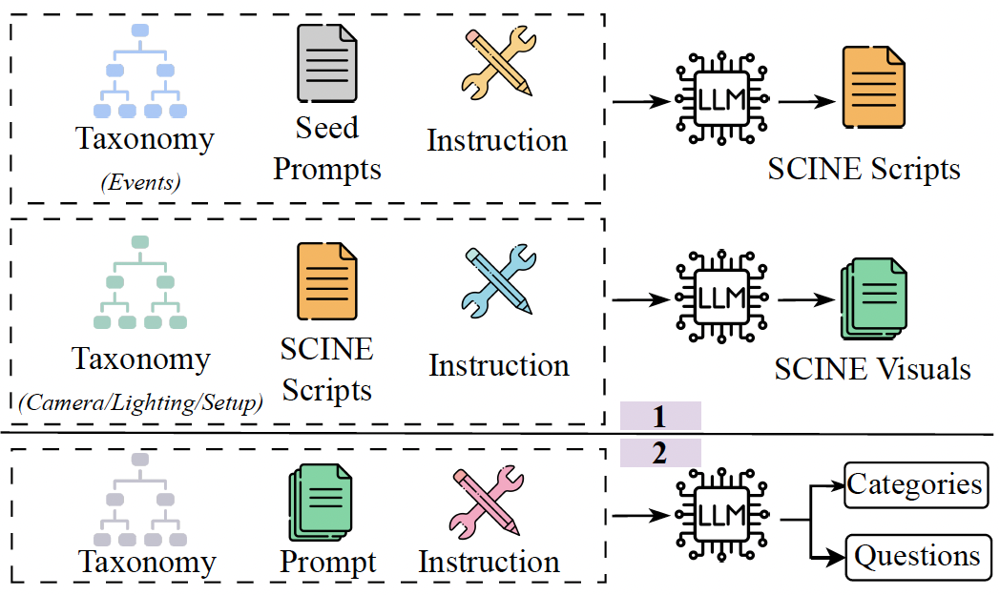
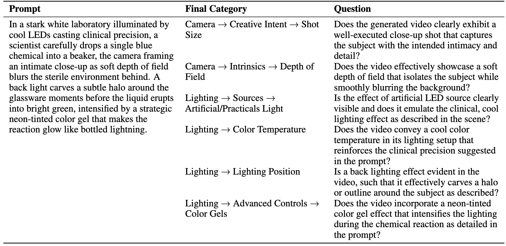

NeurIPS 2025
Recent advances in video generation have enabled high-fidelity video synthesis from user provided prompts. However, existing models and benchmarks fail to capture the complexity and requirements of professional video generation. Towards that goal, we introduce Stable Cinemetrics, a structured evaluation framework that formalizes filmmaking controls into four disentangled, hierarchical taxonomies: Setup, Event, Lighting, and Camera. Together, these taxonomies define 76 fine-grained control nodes grounded in industry practices. Using these taxonomies, we construct a benchmark of prompts aligned with professional use cases and develop an automated pipeline for prompt categorization and question generation, enabling independent evaluation of each control dimension. We conduct a large-scale human study spanning 10+ models and 20K videos, annotated by a pool of 80+ film professionals. Our analysis, both coarse and fine-grained reveal that even the strongest current models exhibit significant gaps, particularly in Events and Camera-related controls. To enable scalable evaluation, we train an automatic evaluator, a vision-language model aligned with expert annotations that outperforms existing zero-shot baselines. SCINE is the first approach to situate professional video generation within the landscape of video generative models, introducing taxonomies centered around cinematic controls and supporting them with structured evaluation pipelines and detailed analyses to guide future research.
To reflect real world professional workflows, we develop SCINE Scripts and Visuals by sampling control nodes from our defined taxonomies.

In SCINE prompts, each control node is categorized, and specific questions are generated for every node, enabling focused and independent evaluation of each cinematic aspect.

Our Vision-Language Model surpasses baseline models in alignment with expert annotations for evaluating professional video generation.

We thank Robert Legato, Hanno Basse and Heather Ferreira for their valuable input on our work. We are also grateful to the team at MovieLabs for their feedback on our taxonomies. A special thanks to Cedric Wagrez for his invaluable assistance human annotations!
@inproceedings{chatterjee2025stablecinemetrics,
title = {Stable Cinemetrics: Structured Taxonomy and Evaluation for Professional Video Generation},
author = {Agneet Chatterjee and Rahim Entezari and Maksym Zhuravinskyi and Max Lapin and Reshinth Adithyan and Amit Raj and Chitta Baral and Yezhou Yang and Varun Jampani},
booktitle = {NeurIPS},
year = {2025},
note = {Project page: https://stable-cinemetrics.github.io/}
}